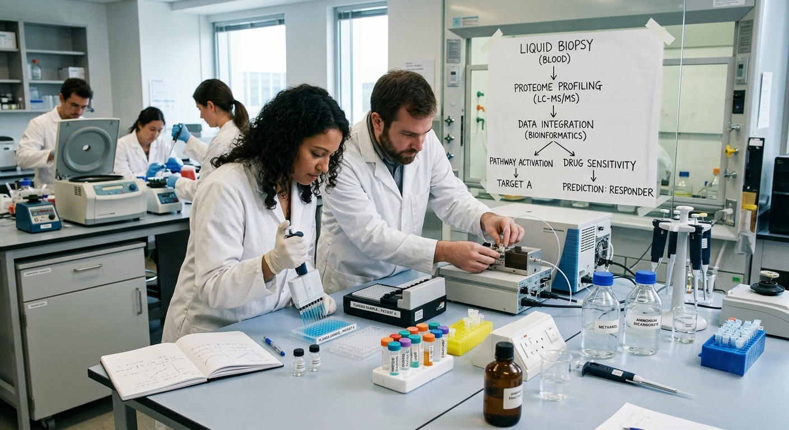

Central Strategic Intelligence for Biotech & Pharma.
ClarezAI is your strategic intelligence partner — integrating Medical Affairs expertise, AI-powered analytics, clinical innovation, and translational science to transform complex data into actionable insights that drive evidence-based decisions.
Retina AI Strategic Insight
About ClarezAI
One integrated platform — multiple execution engines.
ClarezAI empowers biotech and pharmaceutical organizations with integrated strategic intelligence solutions that connect science, clinical development, and Medical Affairs through execution. Combining deep therapeutic expertise with AI-driven innovation, we deliver actionable insights that accelerate development, strengthen evidence generation, and maximize real-world impact.
Explore our products →Our Products
Four products. One Strategic Intelligence Engine.
Each product is best-in-class on its own — and dramatically more powerful when combined as a vertically integrated stack across the product lifecycle.
ClarezAI MA
Medical Affairs Excellence
Full-suite Medical Affairs function and support — strategy, medical communications, publications, congress, advisory boards, and KOL engagement — delivered cost-efficiently without building an entire internal team.
Learn more →CASExAI
Clinical Trial Efficiency & Performance
An AI-driven clinical platform — CTMS, SKYE (AI study-coordinator assistant), SARA (ePROs mobile app), Mobile Retina Clinic, and site engagement tools that accelerate enrollment and retention.
Learn more →NRSS
Near-Real Surgical Systems
An AI-powered Near-Real Human Eye Model — concept-to-validation testing, PK/PD modeling, drug distribution, dose optimization, and surgical training and assessment.
Learn more →
ClinomicsAI
Deep Proteomic Analysis & Bioinformatics
Minimally invasive liquid biopsy proteomics built on Stanford-licensed IP — real-time molecular insights, drug-sensitive pathway discovery, safety pathway identification, and patient stratification.
Learn more →The ClarezAI Advantage
From traditional approaches to transformative impact.
A unified strategic intelligence ecosystem replaces fragmented vendors, siloed data, and reactive decision-making.
Traditional Approach
ClarezAI Approach
- Fragmented vendors and disconnected systems Unified intelligence ecosystem
- Siloed data and limited visibility Integrated, data-driven insights
- Reactive decision-making Proactive strategic guidance
- High operational overhead Scalable, cost-efficient expertise
- Limited cross-functional coordination End-to-end lifecycle support
Delivering Measurable Impact
Strategic intelligence — translated into measurable outcomes.
Six measurable ways ClarezAI drives operational, clinical, and commercial impact across the product lifecycle.
Accelerate Drug Development
Compress development timelines through coordinated strategic intelligence and integrated execution support.
Reduce Operational Costs
Scale specialized expertise without scaling overhead — a more efficient operating model that maintains depth.
Improve Trial Success
AI-enabled identification, enrollment, engagement, and retention raise the probability of clean clinical outcomes.
Actionable Scientific Insights
Generate molecular, mechanistic, and translational insights that inform decisive development decisions.
Precise Patient Selection
Stratification and biomarker-guided selection enhance treatment response and precision-medicine outcomes.
Scale Medical Affairs
Expand credible MA capabilities efficiently across emerging and established biotech organizations.
Why Choose ClarezAI
Transforming Science into Therapeutic Impact.
ClarezAI unifies artificial intelligence, translational science, clinical development, and medical affairs into a single intelligence ecosystem. By connecting insights across the entire product lifecycle, we help biotechnology and pharmaceutical organizations accelerate development, reduce costs, and improve patient outcomes.
Four Reasons Organizations Choose ClarezAI
End-to-End Healthcare Intelligence
Unlike point solutions that address only one stage of development, ClarezAI integrates scientific discovery, clinical development, medical affairs, and real-world implementation into one connected platform.
Benefit: Better decisions through continuous intelligence across the entire product lifecycle.
Accelerate Development with AI-Driven Insights
Our Strategic Intelligence Engine combines AI, advanced analytics, and domain expertise to identify opportunities, optimize workflows, and support faster decision-making.
Benefit: Shorter development timelines and improved operational efficiency.
Improve Clinical and Commercial Success
From patient stratification and clinical trial optimization to KOL engagement and evidence generation, ClarezAI helps organizations increase the likelihood of successful therapeutic adoption.
Benefit: Improved trial outcomes, stronger evidence strategies, and enhanced market readiness.
Scale Expertise Without Scaling Costs
Access specialized expertise in Medical Affairs, Clinical Development, Translational Science, and Proteomics without building large internal teams.
Benefit: Enterprise-level capabilities with a more efficient and cost-effective operating model.
One Platform. Four Specialized Solutions. Unlimited Potential.
ClarezAI is the intelligence layer connecting science, clinical development, medical affairs, and patient care — creating a more efficient pathway from discovery to therapeutic impact.
Start a ConversationReal Expertise
Seasoned biotech/pharma leadership with retina-specialized execution.
A true expertise team and network designed to convert deep ophthalmology experience into focused strategic advantage.
Executive Veterans
Biotech and pharma executive and leadership veterans across the development spectrum.
KOL Networks
Built-in key opinion leader networks to accelerate access and insight from day one.
Retina-Focused
Retina-specialized experts including MDs, PharmDs, and PhDs with deep ophthalmology command.
Proven MA Strategy
Medical Affairs strategy proven across multiple biotech and pharma launches.
100+ Publications
Publication development experience with 100+ presentations and manuscripts delivered.
Let's Work Together
Ready to unlock the full strategic value of your science?
Tell us where you are in development and what you're trying to achieve. We'll follow up to explore how ClarezAI can help.
Trusted by biotech and pharma teams who lead with science.
CLINICAL RESEARCH
RETINANETWORK
PHARMASTRATEGY
KOL ALLIANCE
MEDINSIGHTS
100+
Clinical trials (PI)
100%
FDA audit success
200+
Publications
2026
Ophthalmologist Power List